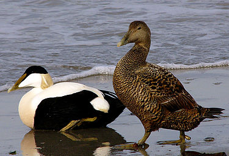

Ærfugl

Opplysninger
Navn: Ærfugl
Vitenskapelig navn: Somateria mollissima
Utbredelse: Nord-Europa, Nord-Amerika og Nord-Asia
Bestand: 10 000-20 000 par i Norge
Rødlistestatus: Kritisk truet
Atferd
Her kan du lese om ærfuglens atferd...
Om nettstedet